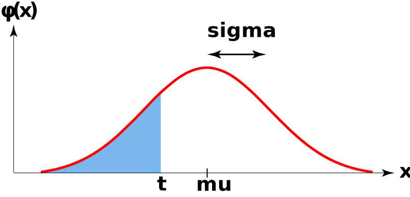

import numpy.random as nprRandom Number Generation
As data scientists, it will be useful for us to know how to generate random numbers using Python. There are several different modules that contain functions for random number generation; the one we will use first is the numpy.random module:
The first function we will explore today is the npr.randint() function. This function enables us to select a random integer from the set of integers between two specified values: for example, to generate a single number from the set of integers in the set \([a, b)\) we would run
npr.randint(a, b)Note that the b value is not included as a value that can be selected; for instance, npr.randint(1, 5) generates a random number from the set \(\{1, 2, 3, 4\}\).
Task 1
Write code to simulate rolling a fair six-sided die 5 times. Think about how this might be translated to a context involving generating random numbers; also, you may need to consult the help file on the
npr.random()function.Use your code from part (a) to answer the following question: when using
npr.randint()to generate multiple random numbers, in what data class is the result stored?
Now, when it comes to random number generation, there is a very important concept known as setting a seed.
Task 2
Write
npr.randint(1, 7)in a code cell, and run it three times. In a Markdown cell just below this cell, answer the following question: did you get the same result each time you ran the code cell?In a new code cell write
npr.seed(15)
npr.randint(1, 7)Run this new cell three times and again answer the question: did you get the same result each time you ran the code cell?
- Now, turn to your neighbor and check whether you both got the same result as each other when completing task (b) above?
As you can see, setting a seed, in a sense, removes a certain amount of randomness in Python. After you set a seed, your random number generator will generate the same number (or set of numbers) every time you run it. Though it may seem unclear as to why we would want this, you may be able to imagine that setting the seed is extremely important when it comes to replicability, a concept we will return to later in the course.
Distributions in Python
If you recall, one of the first things we did in Lab (back in Week 1!) was to use Python as a calculator. At the time, we only used Python to compute relatively simple quantities. Now that we’ve talked a bit about distributions, you can see how Python might be able to simpliy our lives greatly!
For instance, take the probability mass function (p.m.f.) of the \(\mathrm{Bin}(n, p)\) distribution: if \(X \sim \mathrm{Bin}(n, p)\), then \[ \mathbb{P}(X = k) = \binom{n}{k} \cdot p^k \cdot (1 - p)^{n - k} \] Can we get Python to compute this for us? Or, remember how when we want to find areas under a normal density curve we have to use tables- can we perhaps compute these areas using Python?
The answer to both of these questions is, naturally, “yes”! Specifically, we will make use of the scipy.stats module which contains a plethora of functions relating to the distributions we learned in this class (as well as other distributions we won’t have time to cover).
import scipy.stats as spsLet’s tackle the Binomial distribution first. The function sps.binom.pmf() allows us to compute the p.m.f. of the Binomial distribution (with specified parameters) at a particular point.
Task 3
Let \(X \sim \mathrm{Bin}(143, 0.153)\). Compute the following using the sps.binom.pmf() function:
- \(\mathbb{P}(X = 20)\)
- \(\mathbb{P}(X = 40)\) [make sure you understand the output of this; feel free to ask your TA if you are confused!]
Now, let’s talk about areas under the normal curve. If we want to find the following area:

we would run the following code:
sps.norm.cdf(t, mu, sigma)
Task 4
- If \(X \sim \mathcal{N}(3, 0.5)\), compute \(\mathbb{P}(X \leq 2)\).
- If \(X \sim \mathcal{N}(-2, \ 1)\), compute \(\mathbb{P}(X \geq 1)\).
- If \(X \sim \mathcal{N}(0, 1)\), compute \(\mathbb{P}(-1 \leq X \leq 1)\).
Recall that we talked about the uniform distribution; you’ll work with the Python functions that deal with the uniform distribution on the upcoming Homework.
Simulation
Now, let’s tie things together slightly. As data scientists, we obviously love to use data! However, sometimes data can be too time-consuming, costly, or otherwise unfeasible to collect in large quantities. In certain situations, simulations can help address these issues.
When asked to define a “simulation” in the context of data science, ChatGPT returned the following:
[…] a simulation is a computational model or program that is used to replicate real-world scenarios or systems in order to analyze their behavior, predict outcomes, or test hypotheses.
This is actually a great definition: simulations are designed to simulate (i.e. mimic) real-world situations to generate new observations/outcomes that (we hope) closely resemble the real-world outcomes.
For example, suppose we believe that weights of rats in a particular situation are normally distributed with mean 3.8oz and a standard deviation of 0.5oz. Instead of actually going out and collecting the weights of, say, 10 different rats and recording them, we could simulate collecting these weights by generating a series of random numbers that follow the \(\mathcal{N}(3.8, \ 0.5)\) distribution:
array([3.2571847 , 4.29867272, 3.94148925, 3.04685264, 3.51069987,
4.62571827, 2.58666038, 3.58554369, 4.43296813, 3.3666298 ])There are (once again) several modules that contain functions designed to simulate draws from different distributions: for now, we’ll stick with the scipy.stats module.
To simulate n draws from a \(\mathcal{N}(\)mu, sigma\()\) distribution we use the code
sps.norm.rvs(mu, sigma, n)(note that, by default, the sample size comes at the end!) To simulate n draws from a \(\mathrm{Unif}(\)a, b\()\) distribution we use the code
sps.uniform.rvs(a, b, n)
Task 5
The time spent waiting in line at Romaine’s is uniformly distributed between 2 mins and 10 mins. Simulate the process of waiting in line at Romaine’s one hundred times; store your result in a variable called
xand display only the first 10 elements ofx. (Hint: Remember how to index variables!)The temperature of a healthy adult is normally distributed with mean 98.2 degrees Fahrenheit and standard deviation 2.4 degrees Fahrenheit. Simulate the process of selecting 150 healthy adults and recording their temperatures (in degrees Fahrenheit); store your result in a variable called
yand display only the first 10 elements ofy. (Hint: Remember how to index variables!)
It turns out you can use simulations to approximate probabilities that would otherwise be very difficult to compute by hand. You will explore this topic further on the upcoming Homework assignment.